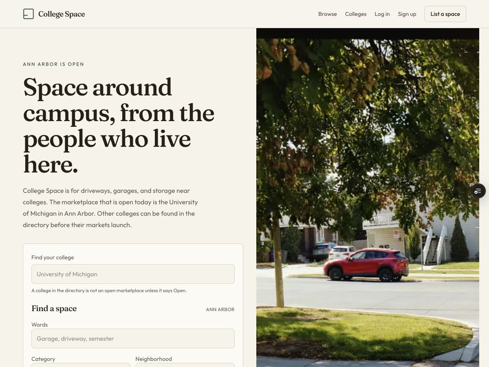

Molecular structure prediction brings together computational chemistry and machine learning. This research benchmarks generative and co-folding models, evaluates predicted structures, and investigates BoltzGen’s input-order invariance.
Research Assistant / May 2026–present
THESIS / IN PROGRESS
APPLIED MATHEMATICS SENIOR THESIS
Rating models for heads-up poker
Can margin of victory improve predictions of future heads-up poker outcomes? This thesis compares Elo-style models that incorporate winning margins with standard win/loss-based ratings.
Heads-up no-limit poker · Rating models · Predictive evaluationTHESIS / IN PROGRESS
COMPUTER SCIENCE & ECONOMICS SENIOR THESIS
Making medical image segmentation more adaptable
Yale Vision Laboratory
Neighboring slices · Conceptual illustration
This thesis explores sequential test-time adaptation for medical image segmentation, asking whether predictions from neighboring image slices can help models adapt to unfamiliar data.
The approach combines image registration to align predictions between slices with energy-based adaptation to encourage anatomically plausible segmentations. The work examines when adaptation helps, when it doesn’t, and what explains those differences.
Currently Building.
IN DEVELOPMENT
College Space
APPLICATION / MARKETPLACE
○ ○ ○COLLEGE SPACE / DEVELOPMENT PREVIEW

Actual development preview · Demo content
Selected Projects.
Machine learning, chemistry, and cybersecurity. 2021–2025